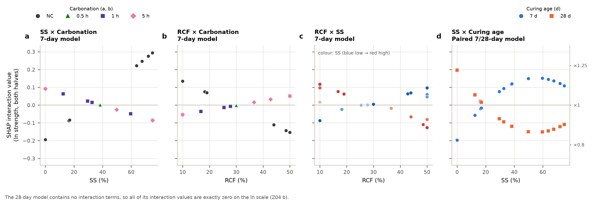
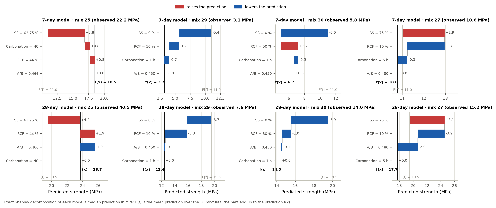
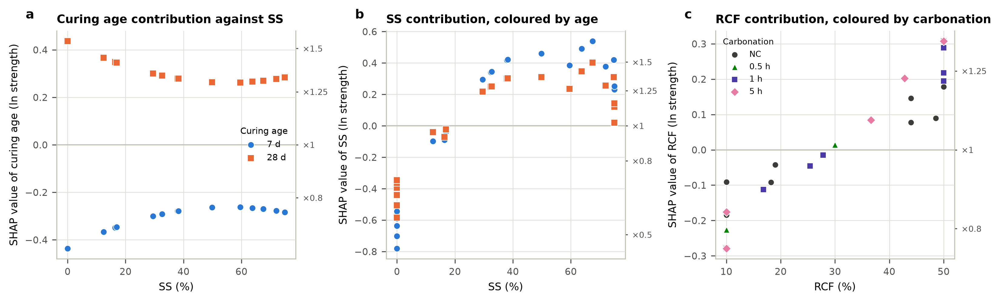
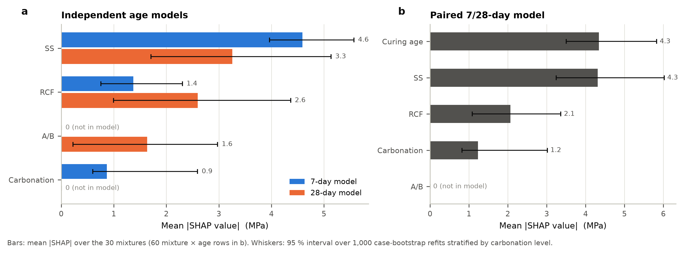
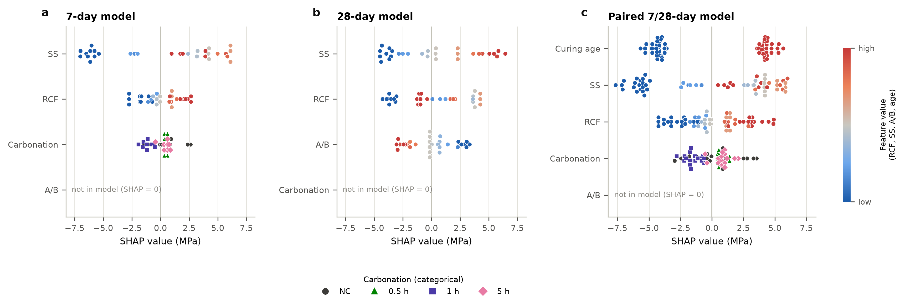

SHAP explanations of the strength models
7-day, 28-day and paired 7/28-day models · exact Shapley values · carbonation as a 4-level categorical input · 2026-09-29
- 7-day model. SS dominates (mean |SHAP| 0.50 on the ln scale, about 4.6 MPa; ranked first in 99 % of refits), followed by RCF (0.15) and carbonation (0.08). The largest interaction is SS × carbonation (0.095 for the pair), then RCF × carbonation and RCF × SS (0.057 each). A/B is not in the model.
- 28-day model. SS (0.17), RCF (0.14) and A/B (0.08) are closer together; SS is ranked first in 66 % of refits and RCF in 29 %. Carbonation is not in the model and the model has no interactions, so every interaction value is zero.
- Paired model. Curing age (0.34) is almost as influential as SS (0.36). Its only interaction is with SS (0.137 for the pair): the 28-day advantage is largest in NaOH-only mixes.
SHAP values here are exact interventional Shapley values of each fitted model, computed over all coalitions of its inputs (16 for four inputs, 32 with curing age) with the 30 real mixtures as the background set (60 mixture × age rows for the paired model). No sampling approximation is involved. The inputs are the actual model inputs: RCF (%), SS (%), A/B and carbonation. Carbonation is one categorical input with four levels (NC, 0.5 h, 1 h, 5 h). When it is absent from a coalition its level is taken from a background mixture, so its level indicators and its carbonated × RCF and carbonated × SS terms always move together. It is never treated as a number. The paired model adds curing age (7 or 28 d) as a fifth input. SHAP interaction values follow Lundberg et al. (2020).
Values are computed on the ln-strength scale, where the models were fitted. On that scale the contributions add up exactly and the interaction values correspond one-to-one to the models' interaction terms. Axes also show the multiplicative factor exp(SHAP). The waterfalls and the supplementary figures use the MPa scale (median prediction). Checks: every decomposition satisfies Shapley efficiency to machine precision. The values agree with shap.ExactExplainer (0.51.0) to within 1.9e-15 for values and interaction values. For the additive 28-day model they also equal the closed-form contributions (difference 9.2e-16). Importance intervals come from 1,000 case-bootstrap refits stratified by carbonation level (999 usable for the paired model).
SHAP describes how each fitted model uses its inputs, not causal effects. An input a model does not contain gets exactly zero. The values depend on the background set (here the design itself), and the 28-day model predicts new mixtures much less precisely than the 7-day model (predicted R² 0.38 vs 0.91), so its SHAP pattern is less certain.
| Model | Input | Mean |SHAP|, ln [95 % boot] | Typical factor | Mean |SHAP|, MPa [95 % boot] | Ranked first in refits |
|---|
| 7-day model | RCF | 0.152 [0.088–0.216] | ×1.16 | 1.37 [0.76–2.30] | 0 % |
| 7-day model | SS | 0.498 [0.428–0.557] | ×1.65 | 4.59 [3.96–5.57] | 99 % |
| 7-day model | A/B | 0 (not in model) | – | 0 | 0 % |
| 7-day model | Carbonation | 0.082 [0.055–0.195] | ×1.09 | 0.87 [0.60–2.59] | 1 % |
| 28-day model | RCF | 0.136 [0.055–0.220] | ×1.15 | 2.60 [1.00–4.37] | 29 % |
| 28-day model | SS | 0.168 [0.089–0.253] | ×1.18 | 3.25 [1.71–5.14] | 66 % |
| 28-day model | A/B | 0.083 [0.011–0.153] | ×1.09 | 1.63 [0.22–2.98] | 5 % |
| 28-day model | Carbonation | 0 (not in model) | – | 0 | 0 % |
| Paired 7/28-day model | RCF | 0.153 [0.080–0.228] | ×1.16 | 2.06 [1.09–3.36] | 0 % |
| Paired 7/28-day model | SS | 0.361 [0.280–0.439] | ×1.44 | 4.31 [3.24–6.02] | 68 % |
| Paired 7/28-day model | A/B | 0 (not in model) | – | 0 | 0 % |
| Paired 7/28-day model | Carbonation | 0.083 [0.055–0.175] | ×1.09 | 1.23 [0.82–3.02] | 0 % |
| Paired 7/28-day model | Curing age | 0.338 [0.295–0.384] | ×1.40 | 4.34 [3.50–5.83] | 32 % |
| Model | Pair | Mean |interaction|, per half | Full pair effect | Typical factor |
|---|
| 7-day model | RCF × SS | 0.028 | 0.055 | ×1.06 |
| 7-day model | RCF × Carbonation | 0.028 | 0.057 | ×1.06 |
| 7-day model | SS × Carbonation | 0.047 | 0.095 | ×1.10 |
| Paired 7/28-day model | RCF × SS | 0.028 | 0.056 | ×1.06 |
| Paired 7/28-day model | RCF × Carbonation | 0.029 | 0.057 | ×1.06 |
| Paired 7/28-day model | SS × Carbonation | 0.048 | 0.095 | ×1.10 |
| Paired 7/28-day model | SS × Curing age | 0.069 | 0.137 | ×1.15 |
Z01. Mean |SHAP| feature importance

Average absolute SHAP value of each input over the 30 mixtures (60 mixture × age rows for the paired model), on the ln-strength scale. Whiskers: 95 % interval over 1,000 case-bootstrap refits stratified by carbonation level. The intervals are conditional on the selected terms, so an input the model does not contain has zero importance by construction (A/B in the 7-day model, carbonation in the 28-day model).
Z02. SHAP summary (beeswarm)

Each dot is one mixture: its horizontal position is the SHAP value of that input, the change in predicted ln strength (top axis: the equivalent multiplicative factor on strength) relative to the average prediction. Colour gives the input's own value (blue low, red high); carbonation is categorical and is shown by level. Inputs are ordered by mean |SHAP|.
Z03. SHAP dependence plots, 7-day and 28-day models on one scale

SHAP value of each input against its value, for every mixture. Vertical spread at a given input value comes from interactions with the other inputs; the 28-day model is additive, so its points fall on single curves. Carbonation (right) is plotted by level, coloured by SS, with the level mean as a bar.
Z04. SHAP interaction matrices

Mean absolute SHAP interaction values. The diagonal is the main effect of each input; each off-diagonal cell holds one half of the pair's interaction (the full pair effect is twice the cell). A zero cell means the model has no term linking the two inputs.
Z05. SHAP interaction dependence plots

Full interaction effect (both halves) for the key pairs. a: carbonation raises strength at low SS and lowers it at high SS in the 7-day model; b: RCF helps more when carbonated; c: RCF helps more at low SS; d: in the paired model the 28-day advantage is largest at low SS.
Z06. Waterfall decompositions (MPa)

Exact Shapley decomposition of each model's median prediction in MPa for four mixtures: the highest-strength mix (25), a weak NaOH-only mix (29), a carbonated high-RCF NaOH-only mix (30) and a carbonated silicate-rich mix (27). E[f] is the mean prediction over the 30 mixtures.
Z07. Paired model: curing age

a: SHAP value of curing age against SS, showing that the 7 → 28-day contribution is largest in NaOH-only mixes; b: SHAP value of SS coloured by age, showing the flatter SS response at 28 days; c: SHAP value of RCF by carbonation level.
Z08a. Supplementary: importance on the MPa scale

As Z01, with SHAP values of the median prediction in MPa.
Z08b. Supplementary: summary on the MPa scale

As Z02, with SHAP values in MPa. On this scale the log-linear models are no longer additive, so even the 28-day model shows small interactions.